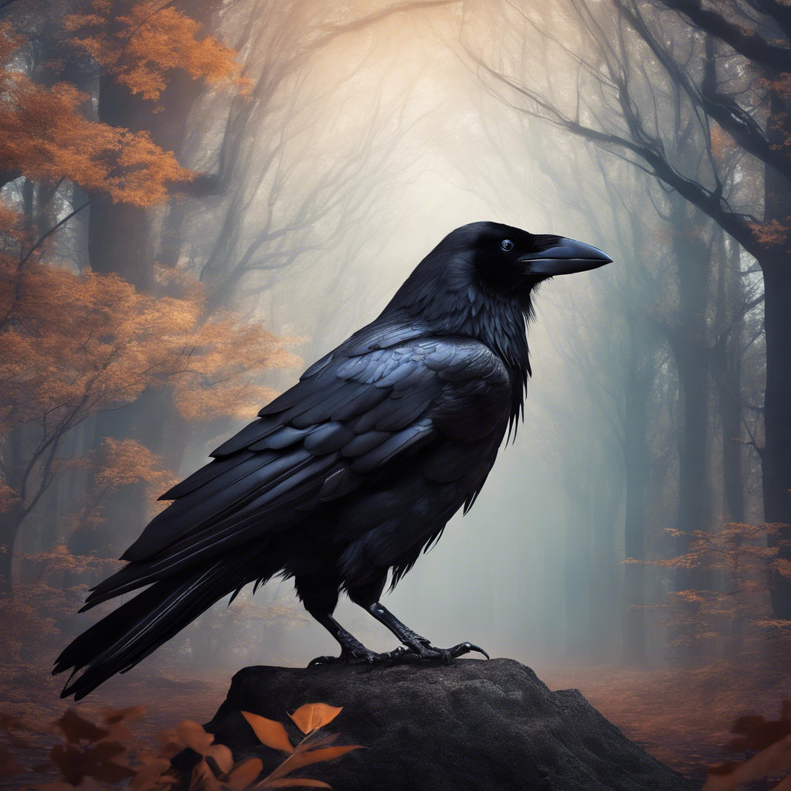

HÁTTÉRTÖRTÉNET
Lassan visszanyered az eszméletedet. Egy vidáman trillázó énekesmadár hangjára felnyitod a szemedet. Zöld bársonypamlagon fekszel, egy felhők közt úszó hatalmas fehér kastély legmagasabb tornyában. Fölkelsz, hogy körülnézz. A csillogó óarany tollú énekesmadár a vár ormán ragyog. Mögötte az óceánkék égbolt, melyen sehol sem látod a napot.
Különös, idegen ruhát viselsz, sötétzöld bricseszt és a mellén kivarrt bőrzekét. Lábadon rőtvörös puha, kényelmes borjúbőr csizma feszül, nadrágod a csizmaszárba tűrve. Nehéz kard lóg az oldaladon, és legnagyobb meglepetésedre érzed, hogy ügyesen tudsz vele bánni. Miközben a madár trilláit hallgatod, megpróbálod felidézni a Föld emlékét, de minden olyan távoli és ködös. Valaki kiemelt jólismert világodból és megtanított a kardforgatás művészetére. Arra nem emlékszel, hogy ki és miért tanított meg rá, de a kard markolata ismerősen simul a kezedhez. Előhúzod, szúrsz és hárítasz, és elcsodálkozol, hogy kardod gyorsabban hasítja a levegőt, mint a szemed követni tudná.
A madarat látszólag nem zavarja, kardforgató tudományod bemutatója, te viszont igencsak meglepődsz, mikor vidám, fuvolázó hangján megszólal.
- Köszöntelek, Végzet Bajnoka! Ne aggódj, egyelőre még biztonságban vagy.
- Hol vagyok? - kérded, mintha csak álom volna az egész.
- Attól tartok, messze, messze az otthonodtól. Ez itt az Orb, és az Istenek Kertjében vagy.
- Mi az az Orb? - kérded.
- Ó, az egészen más, mint a Föld; majd meglátod. Különös világ, tele csodákkal. Az emberek mellett nemcsak hozzám hasonló beszélő állatok lakják, hanem hátborzongató és vérszomjas szörnyetegek, óriások, sárkányok és démonok is. A városokban mágusok és varázslók, a mágia nagy tudói élnek. De ne félj! Azért választottunk bajnokunknak, mert a földiek közül te vagy a legesélyesebb a sikerre. Most pedig eleget kell tennem a megbízatásomnak. Jöjj! Uraim meghagyták, hogy vezessetek hozzájuk a lenti terembe. Kérlek, kövess!
- Ezzel az aranymadár fölröppen és lefelé száll egy csigalépcsőt követve. Hitetlenkedve elindulsz utána a kőlépcsőn. Egy nagy, kör alakú szobába érsz: két alak áll ott, akik jöttödre feléd fordulnak:
- Légy üdvözölve - mondja az egyikük, egy díszes lebernyegbe öltözött nőalak. A feje teljesen kopasz. Ahogy a nő feléd lép, csillogó ruhája folyton változtatja a színét; mielőtt rádöbbennél, hogy mi történik, már el is bájolt. Arcába nézve saját képmásodat pillantod meg, amint egy óriási templomban élethalálharcot vívsz.
Változik a kép, újra magadat látod, amint egy fallal körülvett városból jössz ki. Egyedül vágsz át a kihalt ingoványon, hogy egy dzsungelben köss ki, ahol kék bőrű ördögök vesznek körül. Végigfut a hideg a hátadon, amikor rájössz, hogy sorsod villant fel előtted. Csak akkor veszed észre, hogy a nő teljesen sima arcán még szemek sincsenek, amikor a látomásnak vége.
A másik a szemed láttára változik át. Az egyik pillanatban még nagy tudású, ősz vénember, a másikban már koraérett gyermek. Átalakulása
mindössze néhány pillanatig tart, mégis olyan finoman történik mindez, hogy szinte észre sem lehet venni, hogy arcvonásai megváltoznak. Hangja lágy, nem érződik rajta a kora.
- Azért idéztünk meg ide, Orb földre - mondja -‚ mert meg kívánjuk akadályozni a természet egyensúlyának végzetes felborulását. A kozmikus mérleg túlságosan is felbillent, és neked is részt kell venned a visszaállításában! Mi itt, az Istenek Kertjében nem foglalkozhatunk azzal, hogy helyrehozzuk a dolgokat. Mi nem küzdhetünk meg azzal, aki káosszal fenyegeti az Orbot. Mi inkább az embereket használjuk fel erre a célra. De hogy sikerrel jársz-e, azt nem tudom.
A terem padlója, amelyen állsz, az elképzelhető legrészletesebb, és legvalószerűbb térkép. Apró embereket is látsz rajta, akik ennek a világnak a földjeit művelik, és utcáit járják. Csúcsos tornyú kastélyok világa ez, ahol lovagok paripákon száguldoznak, szélben lobogó zászlókat tartó kísérőik társaságában, s ahol magas fallal védett, templomokkal és bástyákkal teli különös Városok sorakoznak, de a pompa mellett orgyilkosoknak és tolvajoknak találkahelyül szolgáló rejtett pincék is vannak. A szem nélküli halhatatlan ekkor odalép hozzád, és megcirógatja az arcodat. Ruhája most olyan, akár a tenger kékje.
- Most leküldünk az Orb mélyébe - mondja. - Ha a Halál karmai közé kerülsz, nem segíthetünk rajtad. Ne okozz nekünk csalódást!
- Miben ne okozzak nektek csalódást? - kérdeznéd, de ekkor legnagyobb rémületedre a térkép egyik sötét repedése kérlelhetetlenül beszippant.
Feldühít a felismerés, hogy sorsodat mások irányítják, s úgy határozol, hogy mindenáron visszatérsz otthonodba, a Földre. Orb világa azonban elnyel, s a félelemtől elveszted az eszméletedet.
